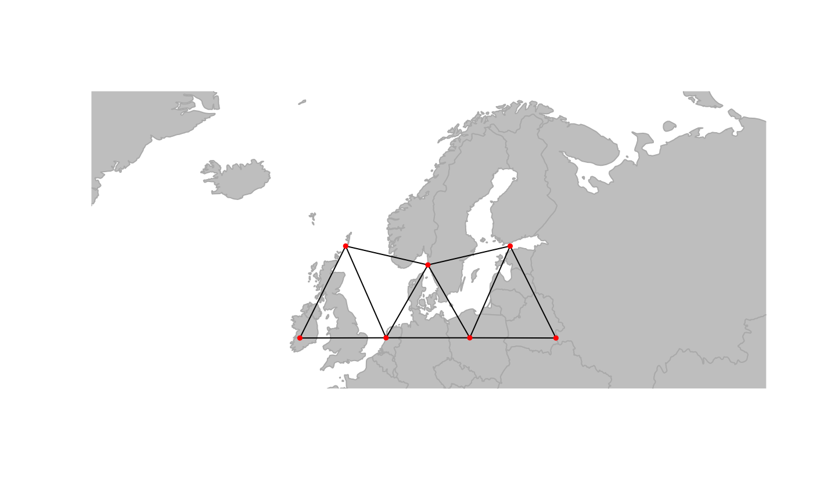

Make a new gGraph object from a custom discrete global grid
Source:R/createNewGraph.R
createNewGraph.RdThis function constructs a new gGraph object based on a
discrete global grid system (DGGS) with a user-defined spatial resolution.
The graph is restricted to a geographic bounding box defined by the user.
Arguments
- geo.box
A geographic bounding box. With either a named numeric vector with
xmin,xmax,ymin,ymaxor an object of classbboxorsf. Coordinates must be in longitude/latitude (EPSG:4326).- spacing
A positive numeric value giving the desired spacing (in km) of the discrete global grid. The closest available DGGS resolution is used.
- ...
Additional arguments passed to other methods (currently not used).
Value
A gGraph object representing the DGGS restricted to the
specified geographic region. The @nodes.attr slot is empty.
Details
The function constructs a discrete global grid using the dggridR package,
then identifies neighboring grid cells using the spdep package, and finally builds a
gGraph object with the resulting graph structure and node coordinates.
Examples
# Define a geographic bounding box (e.g., for a region in Europe)
geo.box <- c(xmin = -10, xmax = 30, ymin = 35, ymax = 60)
# Create a gGraph with a spacing of 300 km
ggraph <- createNewGraph(geo.box = geo.box, spacing = 300)
#> Resolution: 6, Area (km^2): 69967.8493448681, Spacing (km): 261.246386348549, CLS (km): 298.479323187169
plot(ggraph, edge = TRUE)
